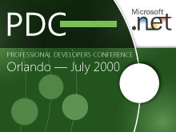
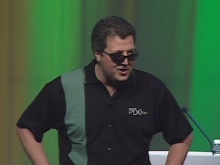

PDC 2000 took place on July 11–14, 2000 at the Orange County Convention Center in Orlando, Florida. .NET Framework and Visual Studio.NET were announced, and the more than 6000+ attendees receive…
PDC 2000 Keynote with Chris Atkinson[WMV] [1:31:33] [2011/05/21]This PDC keynote begins with a little music and then some fun .NET graphics before a comedy act performed by Richard Jeni. Then Chris Atkinson comes out on stage to deliver some .NET content before…
PDC 2000 Keynote with Bill Gates and Chris Atkinson[WMV] [1:47:14] [2011/05/21]This keynote starts off with a tribute to some of the greatest inventors of all time. Chris then talks about web services in the .NET platform in the health care industry and shows a video to help…